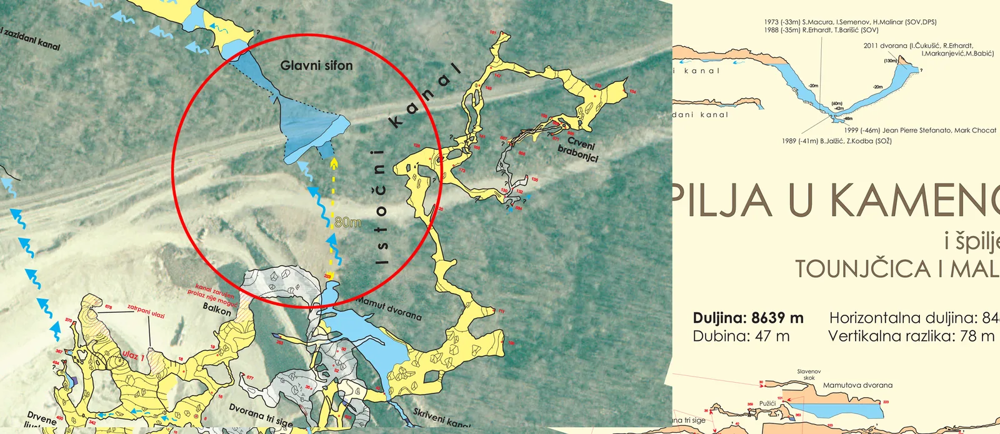

Tounjčica speleoronjenjem spojena sa Špiljom u kamenolomu Tounj
Špilja Tounjčica tehnikom speleoronjenja spojena je sa Mamutovim jezerom u Špilji u kamenolomu Tounj

Nakon prvog vikenda 49. speleoškole, i izleta u Špilju u kamenolomu Tounj, te posjeti Tounjčici, možemo potvrditi da je špilja Tounjčica tehnikom speleoronjenja spojena sa jezerom Mamut dvorane u Špilji u kamenolomu Tounj.
Naime, još 16.3.2019. speleoronioci Ivan Miloš i Jonathan Gabris u svom šestom zaronu u Tounjčicu, preronili su suženje na kojem su stali u prethodnom petom uronu, a koje je zahtijevalo manje ronilačke boce za prolazak. Do tada su ronili sa 12 litarskim sidemount bocama, teškim oko 17 kg svaka, a u zaronu su ih nosili po 6. Sva ronjenja su bila izrazito zahtjevna zbog morfologije kanala - spuštali su se do dubine od 40 metara, dizali na "nulu", odnosno na površinu te opet zaranjali na dubinu od gotovo 40 metara što je povećavalo vrijeme potrebno za dekompresijske zastanke i sigurno ronjenje. Temperatura vode bila je konstantnih 8 stupnjeva.
Sa manjim bocama (ukupno 7 komada te bocom sa kisikom za smanjenje potrebnog vremena dekompresije), prolaskom suženja su ušli u manju dvoranu, sa niskim stropom i zidovima svuda uokolo. Nije im se tada učinilo da ima prolaza dalje te su se vratili natrag.
Prošle subote, Jonathan (koji je polaznik ovogodišnje speleološke škole), odlučio je sa ronilačkom opremom zaroniti iz Mamutovog jezera kako bi pronašao eventualni i najizgledniji put do mjesta gdje su zadnji puta stali. Preplivavši cijelo jezero zavukao se u mali "zabiti" kutak jezera Mamut dvorane i naišao na arijadninu nit koju su postavili u zadnjem uronu. Zaronio je i potvrdio da je, po morfologiji kanala, položaju suženja i poziciji sidrišta stvarno riječ o njihovoj Arijadninoj niti.
Time je, nakon ovih ukupno 6 zarona, te nakon speleoronilačkih pokušaja još u davnim sedamdesetim (vidi članak ispod teksta), zatim osamdesetim godinama (velebitaši Zoran Stipetić - Patak i Teo Barišić) i nakon preronjavanja prvog sifona Tounjčice 2011. kojeg su izveli (opet) velebitaši Robert Erhardt i Ivica Ćukušić, konačno spojena Tounjčica sa Špiljom u Kamenolomu Tounj. Svi zaroni su video dokumentirani, uključivo i fotografijama iz Tounjčice. Sada slijedi mapiranje učinjenog kako bi se kompletirao nacrt Špilje u Kamenolomu Tounj.
No, kako kažu dečki, treba zaroniti i zaviriti u otkrivene sporedne kanale, tako da posao još nije gotov.
Još jednom im čestitamo na ostvarenom speleološkom i speleoronilačkom uspjehu!
(mp)
Prvo ronjenje u Tounjčici:
Radovan Čepelak, Naše planine 7-8, 1974.
RONJENJE U SIFONU ŠPILJE TOUNJČICE
Dana 9. lipnja 1973. Izvršeno je ronjenje u sifonu špilje Tounjčice kod Tounja. Ovo ronjenje organizirao je speleološki odsjek PD Sveučilišta „Velebit“ iz Zagreba i Društvo za podvodne sportove iz Zagreba (DPS Zagreb).
Nakon transporta opreme do ulaza u špilju i glavne pripreme na ulazu, materijal je dopremljen do sifonskog jezera na kraju glavnog špiljskog kanala udaljenog oko 180 m od ulaza. Tu je započeo glavni dio akcije. Temperatura vode iznosila je 90 C. Fotografska ekipa snimala je s obale i iz čamca s jezera tokom ovog delikatnog pothvata.
U prvom pokušaju ronili su Slobodan Macura, ronilac instruktor iz DPS-a i Hrvoje Malinar ronilac I kategorije i speleološki instruktor iz „Velebita“. Na obali jezera bili su u pripremi četiri rezervna ronioca. Macura, navezan na telefonski kabel, ronio je prvi, a za njim Malinar koji je s karabinerom bio zakvačen na kabel. Voda u sifonu nije bila naročito nistra, ali s porastom dubine bila je sve bistrija, i na dubini od 33 m dokle je Macura dopro bila je potpuno prozirna. Tu sifon ide praktički okomitu u dubinu. Malinar, koji se kretao za prvim roniocem, naišao je na dubini od 16 m jedan odvojak sifona i tu sačekao Macuru do povratka. Obojica su izronili istovremeno. Slijedio je predah i priprema za drugi pokušaj u kojemu su ronili Macura i Igor Semenov, također instruktor iz DPS-a. Voda se od prvog ronjenja bila zamutila, što je jako otežavalo kretanje te su došli do dubine od 27 m i vratili se jer nisu ništa vidjeli.
U ovoj probnoj akciji ronjenja doprlo se do dubine od 33m, a oko 40 do 45 m u dužinu. Time je stečen uvid u morfologiju sifona i iskustvo koje će koristiti u drugom pokušaju. Sudionici akcije bili su veoma zadovoljni i oduševljeni tim pothvatom. Od ukupno petnaest sudionika šestorica su bili ronioci i to: Dva instruktora, dva ronioca II kategorije i dva I kategorije. Ekipa je bila opremljena sa šest aparata za ronjenje na komprimirani zrak do 200 at, strane i domaće proizvodnje, i to četiri dvobočna i dva jednobočna aparata, zatim s gumenim odijelima mokrog tipa, gumenim čamcem, parom malih telefona (izrade I. Kruhaka) za slučaj da se dođe na drugu stranu te drugom neophodnom ronilačkom i speleološkom opremom.
Treba napomenuti da je ovo treće ronjenje i sifonima izvršeno na području SR Hrvatske. Prvo je bilo u sifonu špilje Veternice kod Zagreba, 21. lipnja 1959., Tu je Hrvoje Malinar došao do dubine od 8 m, a dalje nije mogao zbog sniženja stropa i pijeska na dnu sifona. Bruno Puharić ronio je u sifonu Urinjske poilje kod Urinja u Kvarnerskom zaljevu, 26. srpnja 1963. To je u stvari bilo pokusno ronjenje bez upotrebe ronilačkog aparata, a došao je do dubine od 5 do 6 m, i time razmotrio mogućnosti za eventualno slijedeće istraživanje.
Literatura:
Darko Glas: Pothvat u Veternici, Vijesnik 4. i 5. srpnja 1959.
Bruno Puharić: U sifonu Urinjske spilje, Planinarski list, god. 2, svibanj 1971. Br. 2, str. 56-59
Još o dosadašnjim istraživanjima Špilje u Kamenolomu Tounj
Fotogalerija zarona 16.3.2019.
Snimio Marjan Prpić, rasvjetom asistirao Domagoj Čajko
[gallery ids="2392,2393,2394,2395,2396,2397,2398,2399,2400,2401,2402,2403" type="rectangular"]